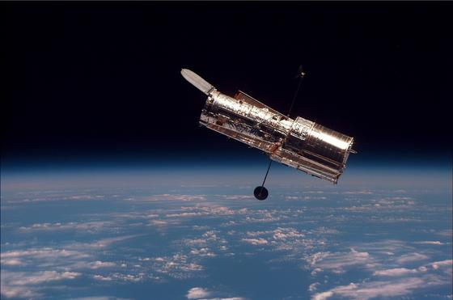
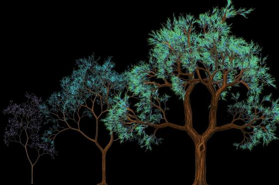
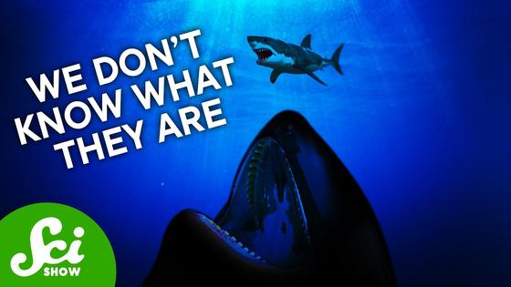
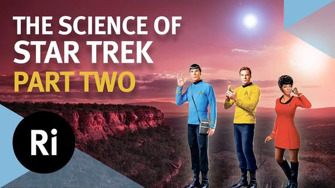

Executive Synthesis: Agent papers ask where failures sit—in the model or the harness—and vLLM ships a fresh release. NASA is considering Hubble servicing, Maruti reports October sales, and Prime Video’s November slate brings new viewing dates.
Cosmos and Life
Space items cover Voyager’s power budget and a possible Hubble servicing mission; biology ranges from a mouse cell-lineage map to a dinosaur skull interpreted as evidence of fruit eating. The results come from distinct studies and should be read with their stated limits.
Space, astronomy and cosmology
| NASA Science: | 3 days ago · 3m |

NASA asks industry about possible commercial Hubble servicing — NASA issued a Request for Information on Oct. 29 to learn whether commercial providers could boost Hubble’s orbit, service or upgrade the telescope, or safely dispose of it at mission end. NASA says Hubble may re-enter in 2033–2034 and that any servicing mission would need to take place by 2032; responses to the request are due Nov. 30. This is an exploration of industry capabilities, not a selected contractor or approved mission, while the agency develops a future flagship telescope.
Takeaway: It adds a measured mission-planning angle to your astronomy interests: a possible life extension is being scoped against orbital decay and a 2032 deadline.
| NASA Jet Propulsion Laboratory: | 4 days ago · 4m |
Takeaway: Your space exploration interest gets a concrete example of how mission teams extend a spacecraft’s science life under power constraints.
| arXiv: | Oct 22 · 5m |
Takeaway: This is a compact example of how repeated transit timing and orbital modeling turn survey light curves into system geometry.
| arXiv: | 6 days ago · 5m |
Takeaway: It links exoplanet population patterns to a specific formation mechanism, with the distinction between model and observation kept explicit.
Biology and science
| Stony Brook University: | 5 days ago · 5m |
Takeaway: It connects dinosaur evolution with changing plant life and the anatomy behind an inferred diet.
| Cornell Chronicle: | 5 days ago · 4m |
A DNA-folding mechanism may connect a family of cancer mutations
—
A Weill Cornell Medicine study reports that loss of BAF-complex function opens DNA loops at thousands of sites, increasing binding by the gene regulator CTCF. The team says this shared change helps explain how mutations in the BAF complex, found in about 20% of human cancers, can alter gene activity across different tumor types. In cell and animal models, deleting CTCF reversed the effect; patient data also supported its role. The proposed targets remain research directions, not established treatments.
Takeaway: Your biology interests include how genome structure and regulation shape cellular behavior.
| Natural Resources Wales: | 5 days ago · 3m |
Takeaway: Your evolution and ecology interests get a clear example of a species’ life cycle linking habitat conditions with another insect.
| MIT News: | 5 days ago · 5m |

A cell-lineage map follows mouse embryos across development — A Whitehead Institute and MIT team used PEtracer to reconstruct the family history of more than one million cells as mouse embryos developed. Heritable DNA edits record cell divisions; researchers combined those lineage maps with gene-activity and location data from embryos sampled at multiple stages. The resulting atlas tracks when cells begin committing to particular fates and how their descendants populate tissues. The paper appeared in Cell on Oct. 8, and a concurrent University of Washington study used a related DNA Typewriter approach.
Takeaway: It offers an unusually broad view of development as a measured process unfolding over time, rather than a collection of snapshots.
Watch
| SciShow: | 4 days ago · 8m |

Two Different Things Are Killing Sharks — SciShow compares declining great-white sightings in South Africa with unexplained shark deaths in North American waters. It outlines possible pressures in South Africa, including orca predation, fishing and beach deterrence, while describing brain inflammation in North American cases as unresolved. The useful takeaway is that similar population declines can have different local causes, and the evidence is not settled.
Takeaway: It brings a current biology question into your science watch list and shows where researchers still lack a causal answer.
| SciShow: | 6 days ago · 15m |
How To Hold Something That's 10,000,000 Degrees
—
Hank Green’s SciShow survey explains how scientists contain materials that can react with their container, are extremely small, or are too energetic to touch. Examples include storing alkali metals under mineral oil or argon, passivating fluorine containers, and trapping ions with fields. It connects these techniques to uses such as quantum computing and power generation, showing how practical containment enables experiments.
Takeaway: This accessible physics explainer ties experimental constraints to measurable evidence, echoing the measurement angle in your cosmology reading.
| The Royal Institution: | 7 days ago · 30m |

What Star Trek got right about science (and what it got wrong) | Part 2 — The Royal Institution’s second Star Trek science event compares fictional ideas with astronaut training and current space technology. ESA reserve astronaut Meganne Christian discusses preparation for microgravity, in-space 3D printing and manufacturing; later sections connect the Institution’s history with robotics, holograms, plasma and the physics behind phasers. It is a lively science-and-space talk with real engineering examples under familiar science-fiction concepts.
Takeaway: It connects your space interest to current astronaut training and manufacturing in orbit, while separating engineering from fictional technology.